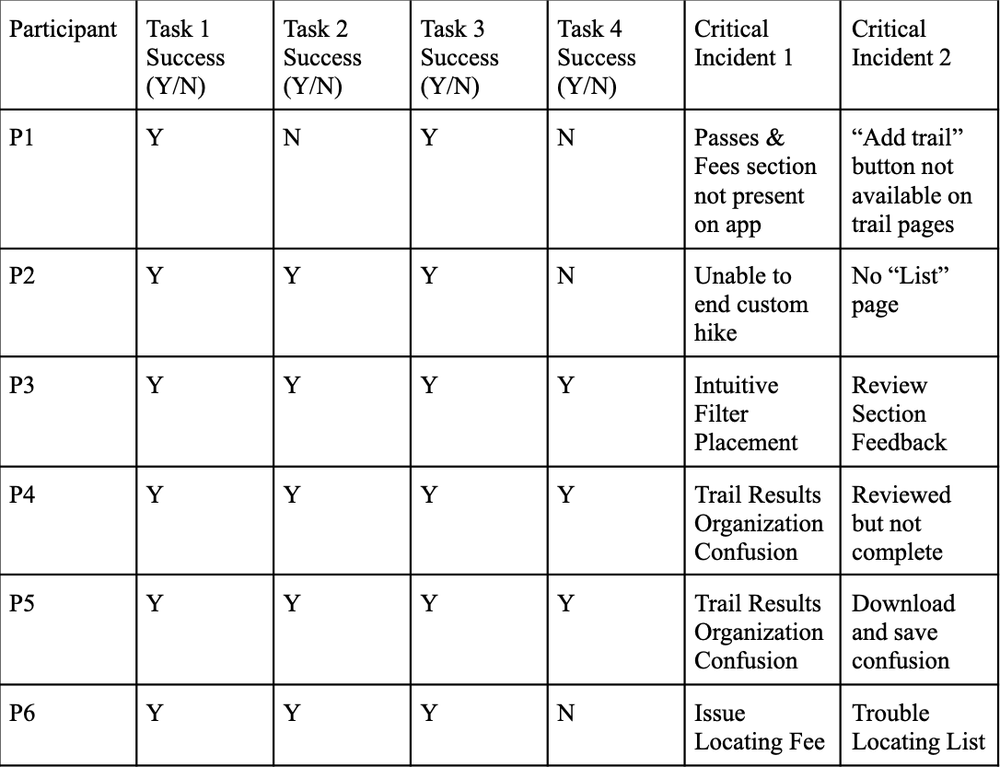

Sam Poynter
Hello, I am a recent Michigan State graduate looking to kickstart a career in UX or Product Management!
Hello, I am a recent Michigan State graduate looking to kickstart a career in UX or Product Management!
Below are some things I have worked on while at Michigan State University. Feel free to click on any of these images to be directed to the project page! :)

The project identified key usability issues in the AllTrails app, and provided actionable recommendations to improve task completion and user experience.
UX Researcher
Co-moderator for usability sessions
Note taker
3 weeks
(April 2025)
Team of 4 MSU Students
This usability study focused on the ease of use, learnability, and intuitiveness of the AllTrails app from the perspective of a user that is unfamiliar with the system.
The primary goals for this study were:

The first step was to establish a couple user personas. We did this to give our team a better idea of the users for AllTrails.
Name: Joseph Gribble
Age: 21
Occupation: College Student
Location: East Lansing, MI
Background: Joseph is a junior at Michigan State studying computer science. He's passionate about technology and the outdoors. During the week he is busy with classes and homework, but would still like to make time for outdoor activities. Since he is a college student, he does not have much disposable income.
Goals: Discover new local trails to explore with friends, find trails that do not require entrance fees, check real-time trail conditions, and organize trails into lists for weekend plans or short breaks during the week.
Needs: Relevant trail recommendations, up-to-date trail information, efficient filter and search functions, progress tracking, low barrier to entry (free or affordable to use)
Name: Jeffrey Boomhauer
Age: 45
Occupation: Business Analyst
Location: Berkeley, CA
Background: Jeffrey is a senior business analyst at a mid-sized company. He lives with his wife, two children (10 and 14), and their energetic Australian Shepherd. He works full-time and is in front of a computer all day. To stay active, Jeffrey likes to walk his dog daily after work, and also explore trails with his family on the weekends.
Goals: Find nearby dog and kid-friendly trails, track personal and family progess, coordinate and plan hikes efficiently, and find out-of-state trails for family vacations.
Needs: Dog and kid-friendly trail filters, reliable trail information, efficient planning tools, ability to save and share trails, route previews and difficulty information, and a clean interface.
These tasks were chosen based off of user personas. We tried to emphasize tasks that would help the personas achieve their goals.
We tracked and analyzed critical usability issues observed during user testing. These findings helped us understand where users struggled and informed our recommendations for improvement. In total, we created 12 of these usability aspect reports. I have included a few of the most important critical isues below.
Observed During: Task 2
What Happened: Some participants couldn't locate the "Passes & Fees" section on specific trails. There was also an issue of fee amounts not being displayed. These inconsistencies led to confusion and task failure.
Why It Matters: Missing fee information could result in users being unprepared, leading to poor user trust or legal issues (e.g., tickets).
Recommendation: Always display the "Passes & Fees" section—even if no info is available—along with a note like "No fees required." Include the dollar amount of passes and fees to avoid unpreparedness.
“Maybe it only shows it if the trail actually requires a pass, I can't find this section anywhere in the trail information”
Observed During: Task 4
What Happened: Users had difficulty adding a trail to a list because the “add” or “save” button was either missing or not discoverable on the trail page.
Why It Matters: Adding trails to lists is a core function of the app. If users can’t locate this button, it undermines the organizational features AllTrails promotes.
Recommendation: Ensure every trail page includes a clearly labeled and visible "Save to List" button near the top of the interface.
“The popular trails are added to the list, but I’m not sure how to add this one… I don’t know where the thingy is for this one.”
Observed During: Task 1
What Happened: Participants were unsure whether trail results were ordered by distance, difficulty, or rating. This led to hesitation and second-guessing during the trail selection process.
Why It Matters: If users don’t understand how results are sorted, it adds cognitive load and can make the app feel unpredictable or disorganized.
Recommendation: Clarify how trail results are ordered—e.g., by default sort, distance, rating, or difficulty—using labels or tooltips above the result list.
“I got confused… is it based on how far away it is, or how long it is, or the star rating?”
Observed During: Task 4 (accidental)
What Happened: One user accidentally started a custom hike while trying to add a trail to a list and then couldn’t figure out how to stop the hike once they left the “Navigate” screen.
Why It Matters: Unintended activity tracking may result in inaccurate data, battery drain, or user frustration—especially if they don’t know the app is still running in the background.
Recommendation: Add a persistent mini-widget or indicator that allows users to pause/end a hike from any screen, or confirm start/stop more clearly within the Navigation UI.
“I’m stuck on the map. How do I get off the custom map now?”
In the table below, each participant was evaluated on a success/failure basis. A success is defined as completing the given task without requiring assistance, and a failure is defined as requiring additional help from the moderator in order to complete the given task.
Based on our usability study, we identified several actionable ways to improve consistency, feature accessibility, and user feedback within the AllTrails mobile app.
While this was completed for a class, if it were to be an actual commercial project these are some of the next steps I would take:
Signal is a free, open-source messaging app focused on privacy and end-to-end encryption. It allows users to send texts and voice messages, as well as secure calls without collecting or storing personal data.
UX Researcher
2 weeks
(March 2025)
Team of 4 MSU Students
This evaluation focused on the usability, consistency, and learnability of the Signal Messenger app. Using a combination of heuristic evaluation and cognitive walkthroughs, our goal was to uncover usability issues that affect the onboarding experience, contact management, privacy controls, and core communication features such as messaging and calling.
We began this section with every member of our group completing their own seperate evaluations, and then we consolidated our evaluations into one document. Combined, our team came up with 23 heuristic violations; however, for the sake of this portfolio I will only include violations that I personally found. Note that these are not all of the heuristics I found, and the full report will be linked at the bottom of this page.
Severity: 2
Location: "Who can find you with your number" page
How Violated: Only gives the user an option to have either everybody or nobody find you with your number without an in between option.
Recommendation: Allow users to select only certain contacts to be able to find the user with their number.
Severity: 2
Location: "Chats" page
How Violated: In order to filter your messages to see which ones are unread, the user has to either click on their profile in the top left corner or swipe up on the existing chats. Neither of these are very intuitive, and I thought the swipe up would simply refresh the page.
Recommendation: Add a filter button that allows for the user to filter through their messages in various ways, not just through filtering by unread.
Severity: 3
Location: “Notifications” section of settings
How Violated: When a user clicks on “Re-register Push Notifications” it simply just tells the user that they have successfully re-registered for push notifications without providing further explanation.
Recommendation: Have this option use a button to re-register for push notifications and include a description of what exactly this does so the user knows if they want to or not. Also include the option to undo this.
Severity: 2
Location: Advanced privacy settings
How Violated: Not every advanced privacy feature is explained, there is even a “Censorship Circumnavigation” button that you cannot turn on because “you are already connected to the Signal service” however, it does not explain this in detail.
Recommendation: Have documentation for all of the advanced privacy features, this is only present in the “Sealed Sender” section
These tasks were chosen based off of user personas. We tried to emphasize tasks that would help the personas achieve their goals.
We tracked and analyzed critical usability issues observed during user testing. These findings helped us understand where users struggled and informed our recommendations for improvement. In total, we created 12 of these usability aspect reports. I have included a few of the most important critical isues below.
Observed During: Task 2
What Happened: Some participants couldn't locate the "Passes & Fees" section on specific trails. There was also an issue of fee amounts not being displayed. These inconsistencies led to confusion and task failure.
Why It Matters: Missing fee information could result in users being unprepared, leading to poor user trust or legal issues (e.g., tickets).
Recommendation: Always display the "Passes & Fees" section—even if no info is available—along with a note like "No fees required." Include the dollar amount of passes and fees to avoid unpreparedness.
“Maybe it only shows it if the trail actually requires a pass, I can't find this section anywhere in the trail information”
Observed During: Task 4
What Happened: Users had difficulty adding a trail to a list because the “add” or “save” button was either missing or not discoverable on the trail page.
Why It Matters: Adding trails to lists is a core function of the app. If users can’t locate this button, it undermines the organizational features AllTrails promotes.
Recommendation: Ensure every trail page includes a clearly labeled and visible "Save to List" button near the top of the interface.
“The popular trails are added to the list, but I’m not sure how to add this one… I don’t know where the thingy is for this one.”
Observed During: Task 1
What Happened: Participants were unsure whether trail results were ordered by distance, difficulty, or rating. This led to hesitation and second-guessing during the trail selection process.
Why It Matters: If users don’t understand how results are sorted, it adds cognitive load and can make the app feel unpredictable or disorganized.
Recommendation: Clarify how trail results are ordered—e.g., by default sort, distance, rating, or difficulty—using labels or tooltips above the result list.
“I got confused… is it based on how far away it is, or how long it is, or the star rating?”
Observed During: Task 4 (accidental)
What Happened: One user accidentally started a custom hike while trying to add a trail to a list and then couldn’t figure out how to stop the hike once they left the “Navigate” screen.
Why It Matters: Unintended activity tracking may result in inaccurate data, battery drain, or user frustration—especially if they don’t know the app is still running in the background.
Recommendation: Add a persistent mini-widget or indicator that allows users to pause/end a hike from any screen, or confirm start/stop more clearly within the Navigation UI.
“I’m stuck on the map. How do I get off the custom map now?”
In the table below, each participant was evaluated on a success/failure basis. A success is defined as completing the given task without requiring assistance, and a failure is defined as requiring additional help from the moderator in order to complete the given task.
Based on our usability study, we identified several actionable ways to improve consistency, feature accessibility, and user feedback within the AllTrails mobile app.
While this was completed for a class, if it were to be an actual commercial project these are some of the next steps I would take: